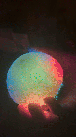

Quantum
is beautiful.
We're building the first object outside of a lab that acts on the laws of quantum mechanics.

We're building the first object outside of a lab that acts on the laws of quantum mechanics.